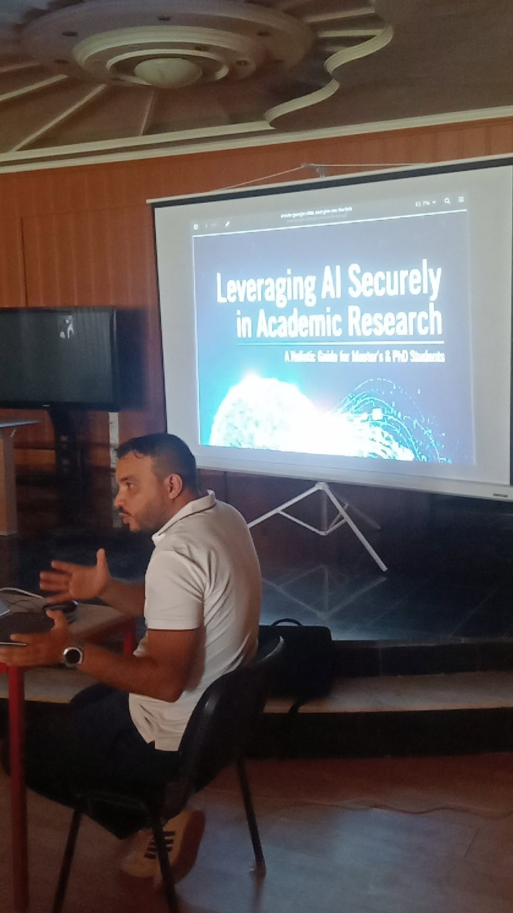

Conférences scientifiques en informatique organisées par le laboratoire LINFI
17 septembre 2025 – Centre Audiovisuel, Université Mohamed Khider de Biskra
Le Département d'Informatique de la Faculté des Sciences Exactes et des Sciences de la Nature et de la Vie de l'Université Mohamed Khider de Biskra, à travers le Laboratoire d'Informatique Intelligente (LINFI), a organisé, dans la matinée du mercredi 17 septembre 2025, une série de conférences scientifiques dans le domaine de l'informatique. Cette activité s'inscrit dans le cadre du programme des activités de l'École Doctorale d'Informatique pour l'année universitaire 2025-2026 et s'est déroulée au Centre Audiovisuel de l'Université Centrale.
Les conférences ont été animées par le Pr. Okba Ben Attia, enseignant-chercheur à l'Université de Technologie de Belfort-Montbéliard (France). Elles ont constitué une plateforme scientifique privilégiée permettant aux participants de découvrir les avancées récentes ainsi que les applications innovantes dans le domaine de l'informatique, l'un des secteurs les plus dynamiques et influents de l'ère numérique.
La manifestation a connu une participation importante des doctorants du Département d'Informatique ainsi que de nombreux étudiants de Master, témoignant de l'intérêt grandissant porté aux technologies de l'intelligence artificielle et à leur contribution dans le développement de solutions innovantes.
Les principaux thèmes abordés
- Utilisation sûre, responsable et éthique des technologies de l'intelligence artificielle.
- Risques liés à une dépendance excessive aux outils d'IA dans la rédaction des travaux scientifiques.
- Préservation de la qualité, de l'originalité et de l'intégrité de la recherche académique.
- Méthodologies modernes de gestion des projets de développement logiciel.
- Prise en compte des normes internationales de cybersécurité appliquées dans les grandes entreprises industrielles.
- Conception de solutions numériques durables répondant aux exigences de la sécurité informatique.
Les conférences se sont distinguées par leur caractère interactif. Les échanges scientifiques entre le conférencier et les participants ont permis aux doctorants et aux étudiants de poser leurs questions sur les perspectives d'utilisation de l'intelligence artificielle dans la recherche scientifique et dans l'industrie. Ces discussions ont également mis en évidence l'importance d'adopter des approches responsables et sécurisées lors du développement et de l'utilisation des systèmes d'intelligence artificielle.
Cette interaction a largement contribué à enrichir le débat académique et à approfondir la compréhension des étudiants concernant les défis, les opportunités et les enjeux liés à l'intelligence artificielle dans un contexte marqué par une transformation numérique rapide.
Une initiative au service de la recherche scientifique
Cette initiative s'inscrit dans la stratégie de l'Université Mohamed Khider de Biskra, visant à promouvoir une formation doctorale de qualité et à renforcer la recherche scientifique en rapprochant les étudiants des innovations technologiques internationales dans les domaines de l'intelligence artificielle, du génie logiciel et de la cybersécurité. Elle reflète également la volonté de l'université de former une nouvelle génération de chercheurs capables d'accompagner les évolutions technologiques et de contribuer activement au développement d'un écosystème scientifique répondant aux besoins nationaux et internationaux.
